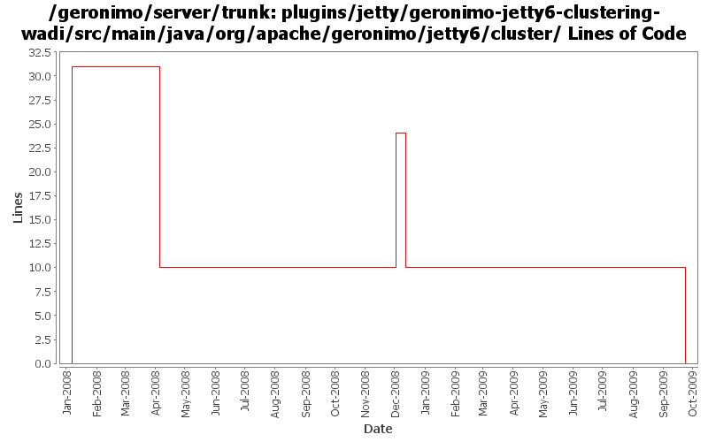

[root]/plugins/jetty/geronimo-jetty6-clustering-wadi/src/main/java/org/apache/geronimo/jetty6/cluster
 wadi
(0 files, 0 lines)
wadi
(0 files, 0 lines)

| Author | Changes | Lines of Code | Lines per Change |
|---|---|---|---|
| Totals | 14 (100.0%) | 55 (100.0%) | 3.9 |
| gdamour | 6 (42.9%) | 41 (74.5%) | 6.8 |
| dwoods | 6 (42.9%) | 14 (25.5%) | 2.3 |
| jbohn | 2 (14.3%) | 0 (0.0%) | 0.0 |
some pom cleanup and remove old jetty6 plugin files
0 lines of code changed in 4 files:
When a session is invalidated, notifySessionDestruction does not need to be executed. We detect that a session has been invalidated by checking if it still exists or not
8 lines of code changed in 1 file:
GERONIMO-4437 revert jetty 6.1.14 changes
0 lines of code changed in 2 files:
GERONIMO-4437 Upgrade to Jetty 6.1.14
14 lines of code changed in 2 files:
*** Definition of annotations streamlining the definition of GBeanInfos.
* @GBean: optional annotation defining the name and j2eeType of a GBean.
If this annotation is not specified, then the default name is assumed to be
the class (simple) name and the default j2eeType is GBean.
* @Priority: optionalannotation defining the priority of a GBean.
* @ParamSpecial: annotation defining a GBean special attribute to be
injected.
* @ParamAttribute: annotation defining the GBean attribute to be injected.
* @ParamReference: annotation defining the GBean reference to be injected.
* @Persistent: annotation for setter methods turning the corresponding GBean
attributes into persistent attributes.
* @Reference: annotation for setter methods turning the corresponding GBean
attribute into a GBean reference.
Note that at most one constructor must be annotated with @ParamSpecial,
@ParamAttribute or @ParamReference.
*** Add a GBeanInfo factory strategy, GBeanInfoFactory, which allows us to
plug-in an annotation based GBeanInfo factory implementation.
*** Use annotation based GBeanInfo declaration for clustering related GBeans.
*** Use xbean-reflect to build GBean instances.
This fixes GERONIMO-3952 - Definition of GBeanInfo via annotations
2 lines of code changed in 1 file:
* move classes depending on geronimo-clustering from geronimo-jetty6 to
geronimo-jetty6-clustering-wadi;
* remove geronimo-clustering dependency from geronimo-jetty6;
* do not load clustering-wadi configuration.
This way the clustering config. does not need to be used when clustering
is actually not used.
This fixes the Jetty part of GERONIMO-3721 WADI modules prevent Geronimo
from starting when offline
31 lines of code changed in 4 files: